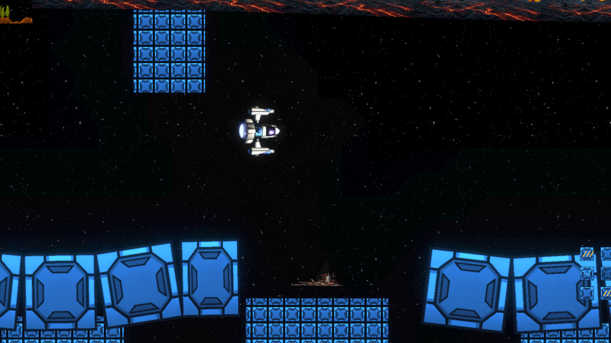
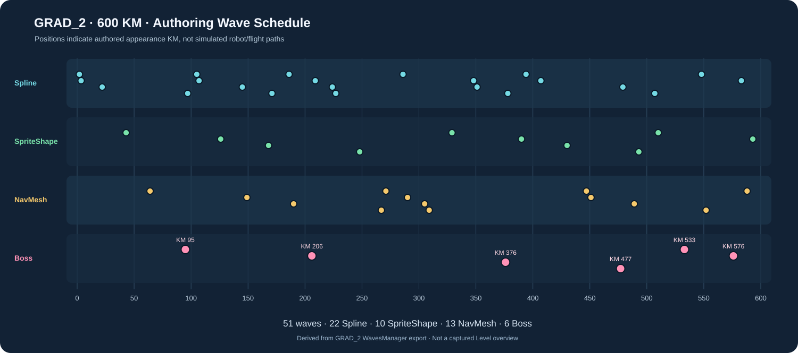

GRAD_2 · סקירת רמה וגלים
סקירה חלקית · NOT_REVIEWED / PENDING
הנתונים אמיתיים: צילום Game View בזמן Play ו-51 גלים שהוגדרו ב-WavesManager. צילום פנורמי של כל 600 הק"מ ומסלולי התנועה בפועל טרם הופקו. מסך המשחק מציג חלון אחד בלבד.
600KM
51גלים
22Spline
10SpriteShape
13NavMesh
6Boss
צילום Game View אמיתי

תמונה יחידה שנקלטה בזמן שהסצנה GRAD_2 הייתה פעילה, לא מפה של כל הרמה.
הופעת גלים לאורך 600 ק"מ

הסימונים הם קילומטר ההופעה שהוגדרו ב-WavesManager. הם אינם הוכחה למסלול, פגיעה או מיקום אויב בתוך Camera View.
פירוט הגלים
| # | KM | Enemy | Mode | Count | Road / Anchor |
|---|---|---|---|---|---|
| 1 | 2 | atom_enemy | Spline | 5 | Not exported |
| 2 | 3.5 | My_Pooper | Spline | 3 | Not exported |
| 3 | 22 | Gradius_enemy | Spline | 6 | Not exported |
| 4 | 43 | MY_Robot_BasicWalker | SpriteShape | 5 | GRAD2_ROBOT_RAIL_R1 |
| 5 | 64 | FIRE_JELLY_NAV_enemy | NavMesh | 4 | SPAWN_LOWER_FAR_RIGHT |
| 6 | 95 | MY_Mini Boss | Boss | 1 | Not exported |
| 7 | 97 | Red_Enemy | Spline | 3 | Not exported |
| 8 | 105 | atomBIG_enemy | Spline | 4 | Not exported |
| 9 | 107 | Red_Enemy | Spline | 4 | Not exported |
| 10 | 126 | MY_Robot_Shooter | SpriteShape | 5 | GRAD2_ROBOT_RAIL_R2 |
| 11 | 145 | My_Sphere | Spline | 3 | Not exported |
| 12 | 149 | NAV_3_yellow_enemy | NavMesh | 3 | SPAWN_MID_FAR_RIGHT |
| 13 | 168 | MY_Robot_BurstShooter | SpriteShape | 4 | GRAD2_ROBOT_RAIL_R2 |
| 14 | 171 | gunner_enemy | Spline | 4 | Not exported |
| 15 | 186 | My_Slicer_enemy | Spline | 5 | Not exported |
| 16 | 190 | NAV_4_AmberInterceptor | NavMesh | 3 | SPAWN_MID_FAR_RIGHT |
| 17 | 206 | CARRIER_SHIP | Boss | 1 | Not exported |
| 18 | 209 | My_Pooper | Spline | 4 | Not exported |
| 19 | 224 | Gradius_enemy | Spline | 5 | Not exported |
| 20 | 227 | atom_enemy | Spline | 4 | Not exported |
| 21 | 248 | MY_Robot_RollingWheel | SpriteShape | 6 | GRAD2_ROBOT_RAIL_R3 |
| 22 | 267 | BLUE_FIRE_JELLY_NAV_enemy | NavMesh | 5 | SPAWN_UPPER_FAR_RIGHT |
| 23 | 271 | NAV_4_AmberInterceptor | NavMesh | 3 | SPAWN_MID_FAR_RIGHT |
| 24 | 286 | FIRE_BIRD_enemy | Spline | 4 | Not exported |
| 25 | 290 | NAV_2_Yellow_enemy | NavMesh | 4 | SPAWN_LOWER_FAR_RIGHT |
| 26 | 305 | NAV_3_yellow_enemy | NavMesh | 5 | SPAWN_MID_FAR_RIGHT |
| 27 | 309 | NAV_4_AmberInterceptor | NavMesh | 3 | SPAWN_UPPER_FAR_RIGHT |
| 28 | 329 | MY_Robot_Shooter | SpriteShape | 6 | GRAD2_ROBOT_RAIL_R3 |
| 29 | 348 | atomBIG_enemy | Spline | 4 | Not exported |
| 30 | 351 | Gradius_enemy | Spline | 4 | Not exported |
| 31 | 376 | MY_Big Dish Boss | Boss | 1 | Not exported |
| 32 | 378 | Red_Enemy | Spline | 4 | Not exported |
| 33 | 390 | MY_Robot_BurstShooter | SpriteShape | 5 | GRAD2_ROBOT_RAIL_R4 |
| 34 | 394 | FIRE_BIRD_enemy | Spline | 5 | Not exported |
| 35 | 407 | FIRE_BIRD_enemy | Spline | 6 | Not exported |
| 36 | 430 | MY_Robot_FireScorpion | SpriteShape | 5 | GRAD2_ROBOT_RAIL_R4 |
| 37 | 447 | NAV_3_yellow_enemy | NavMesh | 5 | SPAWN_MID_FAR_RIGHT |
| 38 | 451 | Nav_misslleWhite_enemy | NavMesh | 3 | SPAWN_UPPER_FAR_RIGHT |
| 39 | 477 | MY_ART_Final Boss | Boss | 1 | Not exported |
| 40 | 479 | gunner_enemy | Spline | 4 | Not exported |
| 41 | 489 | NAV_4_AmberInterceptor | NavMesh | 4 | SPAWN_MID_FAR_RIGHT |
| 42 | 493 | MY_Robot_BurstShooter | SpriteShape | 4 | GRAD2_ROBOT_RAIL_R4 |
| 43 | 507 | atomBIG_enemy | Spline | 5 | Not exported |
| 44 | 510 | MY_Robot_Shooter | SpriteShape | 5 | GRAD2_ROBOT_RAIL_R5 |
| 45 | 533 | MY_Cube_Boss | Boss | 1 | Not exported |
| 46 | 548 | Gradius_enemy | Spline | 5 | Not exported |
| 47 | 552 | BLUE_FIRE_JELLY_NAV_enemy | NavMesh | 4 | SPAWN_LOWER_FAR_RIGHT |
| 48 | 576 | My_Claw Boss | Boss | 1 | Not exported |
| 49 | 583 | FIRE_BIRD_enemy | Spline | 5 | Not exported |
| 50 | 588 | NAV_4_AmberInterceptor | NavMesh | 4 | SPAWN_MID_FAR_RIGHT |
| 51 | 593 | MY_Robot_BurstShooter | SpriteShape | 5 | GRAD2_ROBOT_RAIL_R5 |
נתונים והגבלות
מקור: Unity GRAD_2, WavesManager authored stages, צילום Game View מ-20.10.2026. הנתונים הועלו לצורך סקירה ולא נבדקו או אושרו חזותית.
51 גלים, מתוכם 6 בוסים ו-10 גלי SpriteShape. ל-13 גלים נמצאו נקודות עיגון מפורשות בשדות שנשלפו, ול-38 לא. אין להסיק מכך שמערכת ההופעה שלהם תקולה.